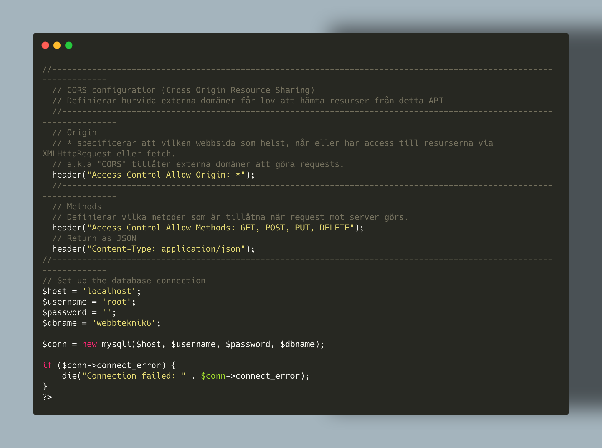
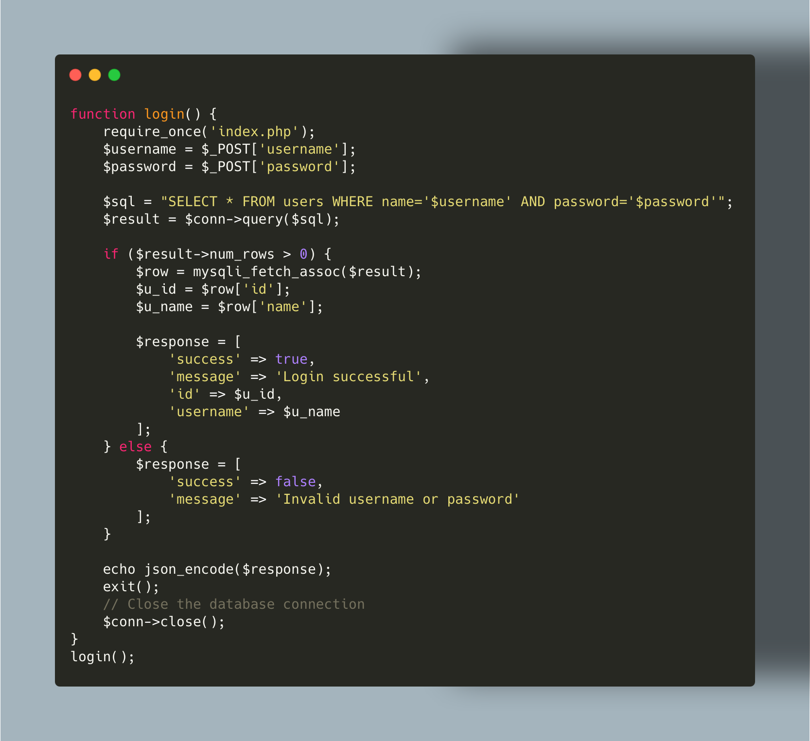

Helped med understand and learn about the webb-browsers standard behaviour. And security when getting data from server -> client
Early stage : switch case. Later : different pages for differend handlers.
Helped me understand how API:s can be designed in different ways for simpler usage
How the login url was created that gets access to the database, and returns JSON object ($response)
Helped med understand and learn about the webb-browsers standard behaviour. And security when getting data from server -> client